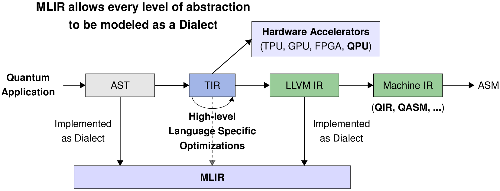
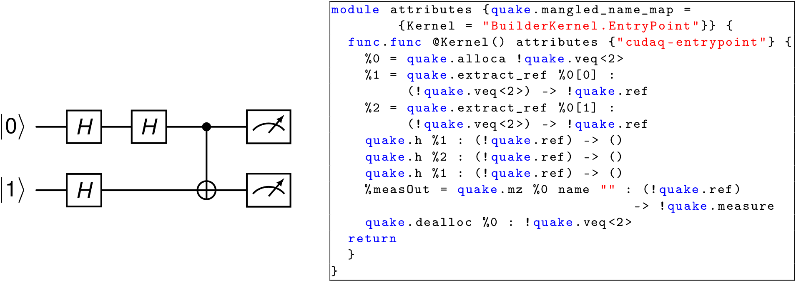
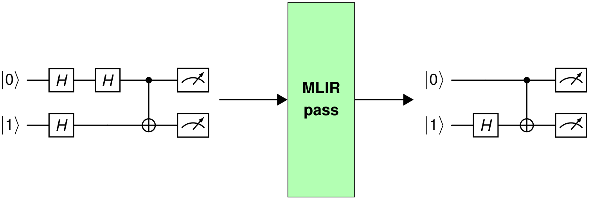
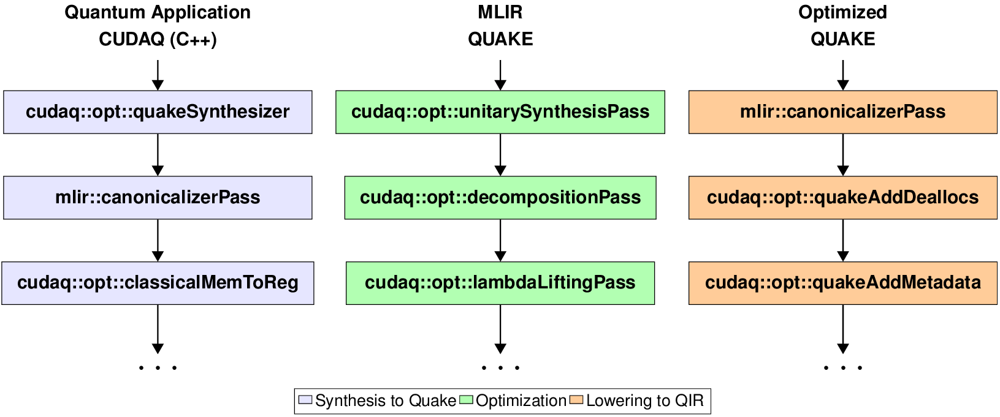
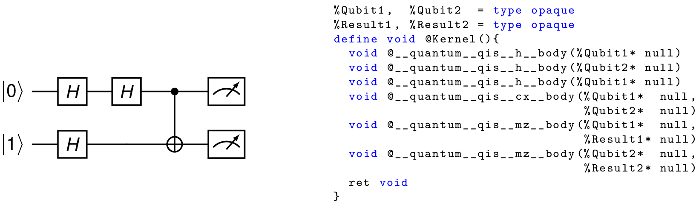

|
MLIR Passes v1.0
|
|
MLIR Passes v1.0
|
MQSS stands for Munich Quantum Software Stack, which is a project of the Munich Quantum Valley (MQV) initiative and is jointly developed by the Leibniz Supercomputing Centre (LRZ) and the Chairs for Design Automation (CDA), and for Computer Architecture and Parallel Systems (CAPS) at TUM. It provides a comprehensive compilation and runtime infrastructure for on-premise and remote quantum devices, support for modern compilation and optimization techniques, and enables both current and future high-level abstractions for quantum programming. This stack is designed to be capable of deployment in a variety of scenarios via flexible configuration options, including stand-alone scenarios for individual systems, cloud access to a variety of devices as well as tight integration into HPC environments supporting quantum acceleration. Within the MQV, a concrete instance of the MQSS is deployed at the LRZ for the MQV, serving as a single access point to all of its quantum devices via multiple compatible access paths, including a web portal, command line access via web credentials as well as the option for hybrid access with tight integration with LRZ's HPC systems. It facilitates the connection between end-users and quantum computing platforms by its integration within HPC infrastructures, such as those found at the LRZ.
MLIR (Multi-Level Intermediate Representation) is a versatile compiler framework for developing domain-specific compilers and optimizing transformations. MLIR originated as part of the LLVM ecosystem and is particularly tailored for modern, complex computational workflows, including machine learning, AI, and heterogeneous hardware.
MLIR supports multiple levels of abstraction within a single framework, allowing developers to work with high-level domain-specific operations down to hardware-specific operations. Users can define their dialects (custom operations and types) for specific problem domains while leveraging the shared infrastructure for optimization and code generation.
Additionally, MLIR promotes interoperability among different models of computation and supports optimization passes across various abstraction levels, including high-level and low-level operations.

For more information on MLIR.
An MLIR dialect is a modular and extensible namespace within the MLIR framework that defines a set of operations, types and attributes specific to a domain, language, or computation model. Dialects enable MLIR to be a highly flexible intermediate representation (IR).
For instance, Quake is an MLIR dialect designed for quantum computing. It serves as part of NVIDIA's CUDAQ framework, which facilitates the development, optimization, and deployment of quantum-classical hybrid programs. Quake represents quantum programs within MLIR, providing a high-level abstraction for quantum operations and allowing developers to leverage the MLIR infrastructure for optimization and compilation.

For more information on QUAKE MLIR Dialect.
An MLIR pass is a transformation or analysis applied to an MLIR intermediate representation (IR) to modify, optimize, or gather information. Passes are a central concept in compiler frameworks, including MLIR, enabling modular, reusable, and extensible transformations of code at various levels of abstraction.

For instance, in the figure above, an MLIR optimization pass is applied to the input circuit, which contains two consecutive Hadamard gates on qubit 0. Accordingly, in the output-optimized circuit shown on the right, those two consecutive Hadamards are removed because they are equivalent to an identity operation.
MLIR has two categories of passes: transformation passes, and analysis passes. The pass presented above is a transformation pass. Moreover, passes can be applied in sequences defined as pass pipelines.

In the figure shown above, three pass pipelines are defined. In purple, a synthesis to QUAKE pipeline synthesizes QUAKE MLIR code from a given input C++ program. In green, an optimization pipeline that applies a series of transformations passes on MLIR modules. Finally, in orange, a pass pipeline that lowers QUAKE MLIR modules to the Quantum Intermediate Representation (QIR).
One fundamental feature of MLIR is its ability to model different levels of abstraction related to a domain-specific language. In contrast, Quantum representations such as the QIR or QASM are low-level representations. Performing transformations on a low-level abstraction might not be a good choice. Low-level representations are a list of quantum gates that operate on qubits. In the example below, the QIR program on the right is equivalent to the quantum circuit on the left.

However, dataflow dependencies are lost in low-level representations, such as QIR. In contrast, MLIR (QUAKE) holds the dataflow dependencies natively, and no modifications to the compilation infrastructure are required. Thus, transformation passes such as decompositions or replacements can be easily implemented. Moreover, other dialects can be integrated with QUAKE to re-utilize the existing MLIR infrastructure.
The collection of MLIR passes stored in this repository is part of the Munich Quantum Software Stack (MQSS). The passes are utilized inside the Quantum Resource Manager (QRM).

For example, a hybrid quantum application can be defined in a high-level programming language such as C++ using the CUDAQ library. Those code fragments in a hybrid quantum application defined as quantum kernels will be submitted to the QRM.
By specifying the target as MQSS at compilation time, the generated binary will orchestrate the classical and quantum resources. Every time a quantum kernel has to be executed, the compiled binary submits the MLIR code of the correspondent quantum kernel to the MQSS stack. Thus, on the MQSS side, the MLIR module is processed by the QRM, which perform agnostic passes (optimization passes) and target-specific passes (transpilation passes and lowering passes). The lowered code is sent to the Quantum device, and the results are collected and sent back to the hybrid application.
The code is publicly available and hosted on GitHub: https://github.com/Munich-Quantum-Software-Stack/passes.
This collection of MLIR passes is released under the Apache License v2.0 with LLVM Exceptions. See LICENSE for more information. Any contribution to the project is assumed to be under the same license.